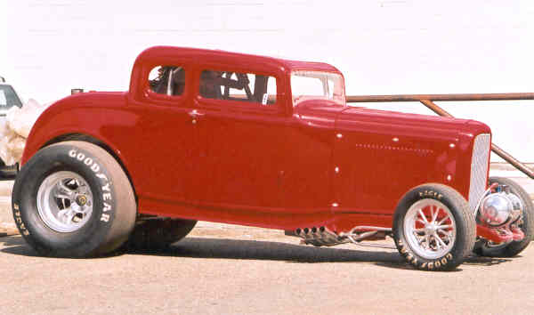
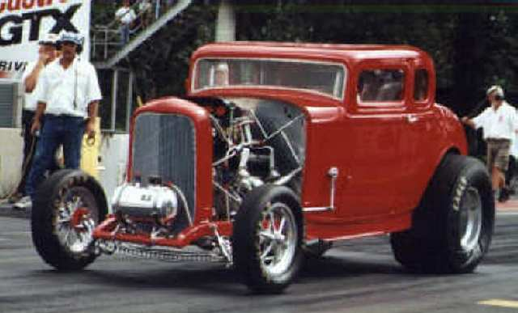
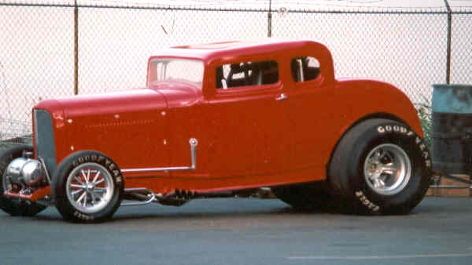
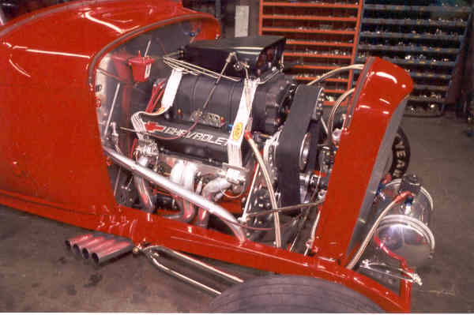

~ Byron's Gasser Madness ~
~ Bob McDonald's 32 Ford Coupe ~
|
I came across your site while cruisin' for a car to purchase. I thought
you may like to see my friend's Alcohol '32 Ford Coupe, 2000hp 406 cu in.
SBC. Car runs in the 7's and is owned by Bob MacDonald of Bob's Rods,
Langley, BC. Perhaps you'd like to add it to your readers rides. Darrell |
|  |
|  |
|  |
|  |